Стена за телевизором
Подобрать рельеф, фактуру и спокойный фон
МАТЕРИАЛЫ · СОЧЕТАНИЯ · ВАШ ИНТЕРЬЕР
От обоев и панелей до зеркала и комода — найдём материалы и детали под вашу комнату, идею или готовый проект
Приезжайте с фотографией комнаты или дизайн-проектом
Ростов-на-Дону · пр. Михаила Нагибина, 30Л
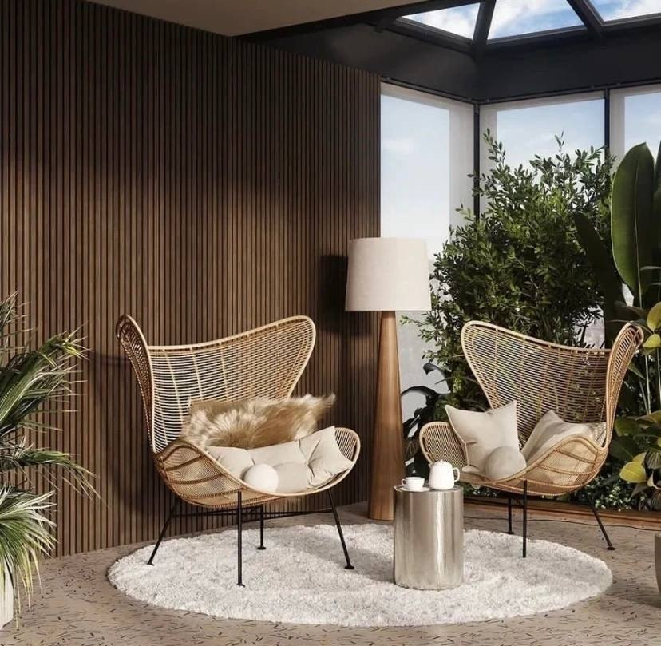
01 / ВСЁ ДЛЯ ИНТЕРЬЕРА
Оформить одну стену или собрать интерьер целиком — начните с нужного материала
Рельеф, фактура, выразительные стены
Рисунок и настроение комнаты
Молдинги, карнизы и архитектура интерьера
Цвет, который объединяет пространство
Глубина и тактильные поверхности
Природный рисунок и фактура
Свет как часть архитектуры
Ритм и геометрия пространства
Комоды, консоли и столы
Завершающий акцент интерьера
Выразительные решения для потолка
02 / БОЛЬШЕ, ЧЕМ ПРОСТО ПАНЕЛИ
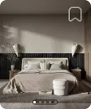
Для выразительной реечной стены
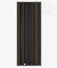
Деревянные и реечные решения
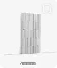
Полимерные рельефные панели
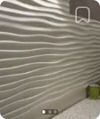
Геометрия и плавный рельеф
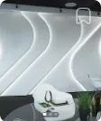
Свет внутри композиции
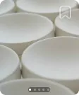
Объёмные элементы для панно
03 / НАЧНИТЕ С КОМНАТЫ
Подобрать рельеф, фактуру и спокойный фон
Сочетать обои, панели и лепной декор
Объединить отделку, зеркало и консоль
Собрать покрытия и детали в единую палитру
04 / СОЧЕТАНИЯ
Примеры применения из публикаций салона — отправная точка для вашего подбора
Реечный ритм, тёплые оттенки, тактильные поверхности

Лепной декор, спокойная палитра и выразительные пропорции
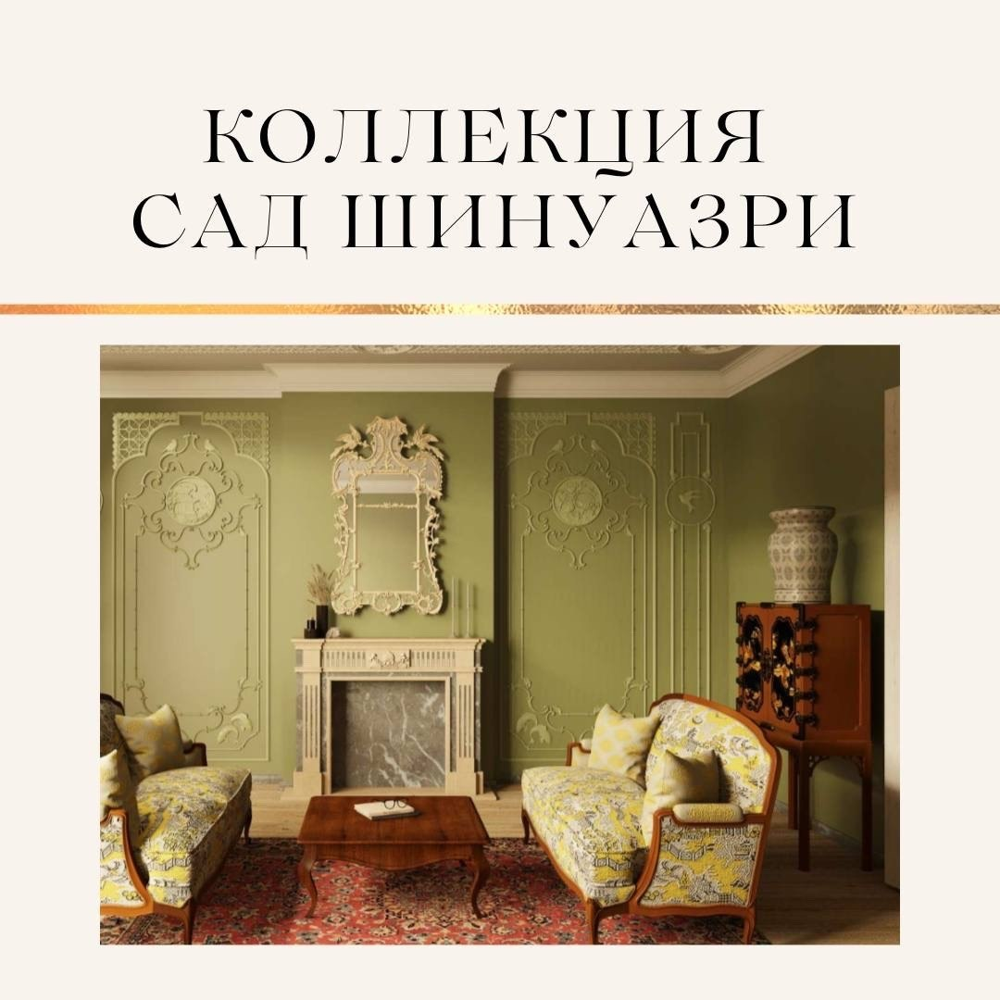
Декоративная композиция, которая задаёт характер комнате
05 / ВАША ИДЕЯ — ОТПРАВНАЯ ТОЧКА
Фото помещения, планировка или понравившийся интерьер помогут начать разговор. Расскажите, что хотите оформить и какой результат вам близок
Фото или проект можно приложить в диалоге с консультантом
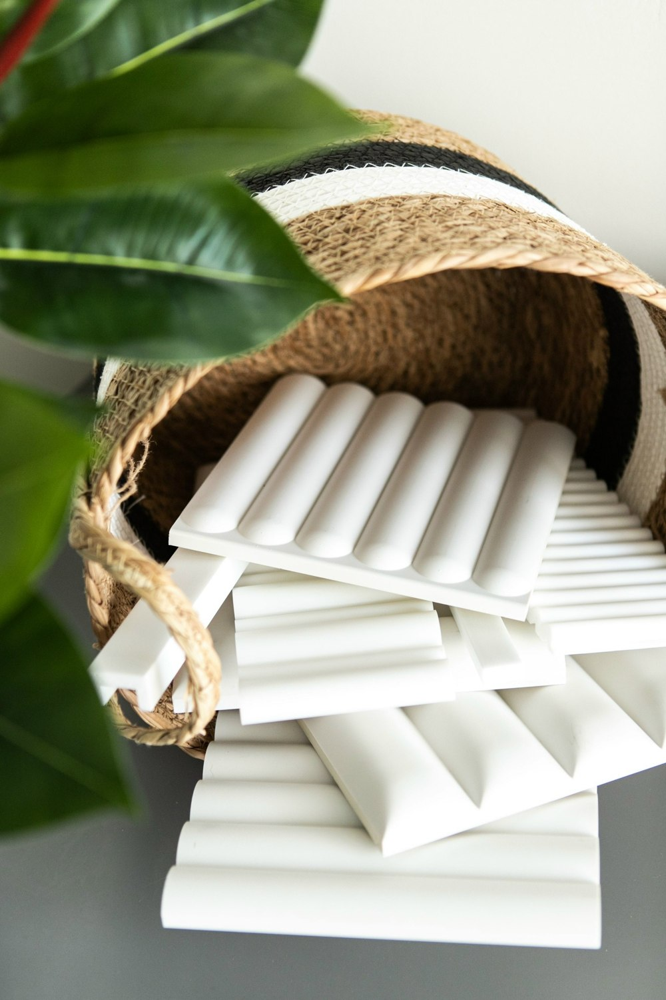
06 / ПРИСМОТРИТЕСЬ К ДЕТАЛЯМ
Сохраните понравившиеся варианты в подборку — обсудите их вместе с консультантом
Цены из предоставленных снимков ВК от 04.11.2026. Единицу продажи, наличие и окончательную стоимость подтвердит салон
07 / ВЫБОР ВЖИВУЮ
Сравните материалы рядом, рассмотрите рельеф и оттенок. Для декора Orac салон предлагает примерку на объекте — доступность образцов и условия выезда согласуются отдельно
08 / МАТЕРИАЛЫ В ДЕЛЕ
Примеры из публикаций МАРТдекор. Авторы и роль салона указаны в исходных материалах
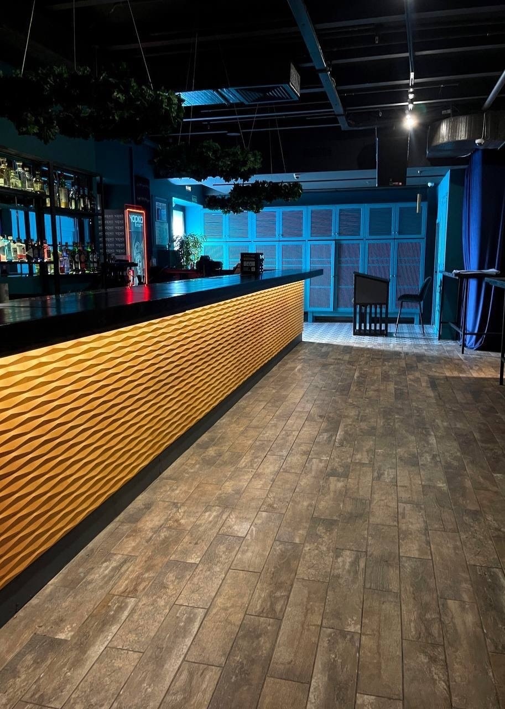
Панель Orac W112 RIDGE в проекте Виктории Смоленцевой. Пример использования декора на мебельной поверхности
Публикация и подробности ↗Коллекция RODECOR «Три века Барокко» в примере оформления спальни из публикации салона
Публикация и подробности ↗09 / ПОНЯТНЫЙ ПОРЯДОК
Помещение, размеры, пожелания и ориентир по бюджету
Материалы, сочетания, доступные образцы и альтернативы
Артикулы, количество, комплектующие и сроки поставки
Способ оплаты, доставка или самовывоз — до оформления заказа
Материал и его формат, площадь, запас на подрезку, комплектующие и доставка. Монтаж и дополнительные услуги обсуждаются отдельно
10 / ПРОФЕССИОНАЛЬНЫЙ ДИАЛОГ
Передайте спецификацию, чертежи или референсы. Обсудите соответствие материалов замыслу и возможные альтернативы
Уточните характеристики, совместимые комплектующие и рекомендации по применению выбранного материала
11 / ЗНАКОМСТВО С САЛОНОМ
Привезите фото комнаты, план или образец уже выбранной отделки. Так проще обсудить цвет, масштаб рисунка и сочетание поверхностей
В публикациях салона представлены Orac, RODECOR, Decaro, Casamance и Charmant. Нужную коллекцию и образцы лучше уточнить до визита
На фото — материалы из публикации салона
12 / ОПЫТ ПОКУПАТЕЛЕЙ
Настоящие снимки карточек из официального виджета Яндекса · 04.11.2026
 Прочитать на Яндекс Картах ↗
Прочитать на Яндекс Картах ↗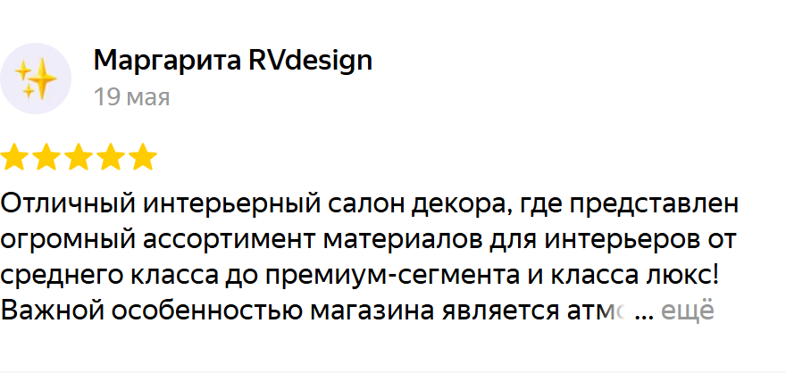
Прочитать на Яндекс Картах ↗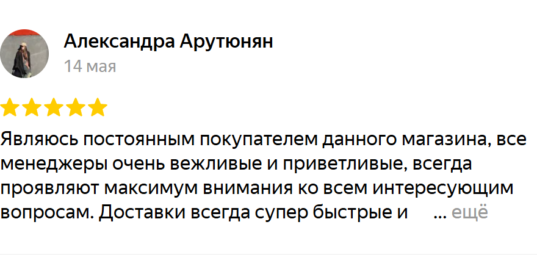
Прочитать на Яндекс Картах ↗Текст и оформление карточек сохранены. Полные отзывы доступны в источнике
Все отзывы о салоне ↗13 / ПЕРЕД ОБРАЩЕНИЕМ
Начать можно с фотографии комнаты, планировки или общей идеи. Консультант поможет обсудить подходящие направления.
Добавьте товары в подборку и отправьте запрос салону. Менеджер уточнит артикулы, единицы продажи, количество и актуальные условия.
Примерка заявлена для декора Orac. Какие образцы доступны, возможен ли выезд и на каких условиях — уточните до визита.
Передайте размеры или проект и запросите расчёт. Уточните, учитывает ли он подрезку, запас, клей и другие комплектующие.
Доставка и самовывоз обсуждаются с салоном. Стоимость и срок зависят от состава заказа и адреса.
Уточните у салона рекомендации по выбранному материалу и возможность помощи с поиском мастера. Монтаж не включён в показанные цены.
В каталоге ВКонтакте представлены комоды, столы, консоли и зеркала. Для выбранной позиции запросите размеры, комплектацию и срок поставки.
14 / УВИДИМСЯ В САЛОНЕ
Ростов-на-Дону
пр. Михаила Нагибина, 30Л
Этаж 0
По данным Яндекс Карт: рядом остановка «Роствертол»
Пн–пт · 10:00–19:00
Сб–вс · 10:00–17:00
Маршрут рассчитывается Яндекс Картами от вашего местоположения